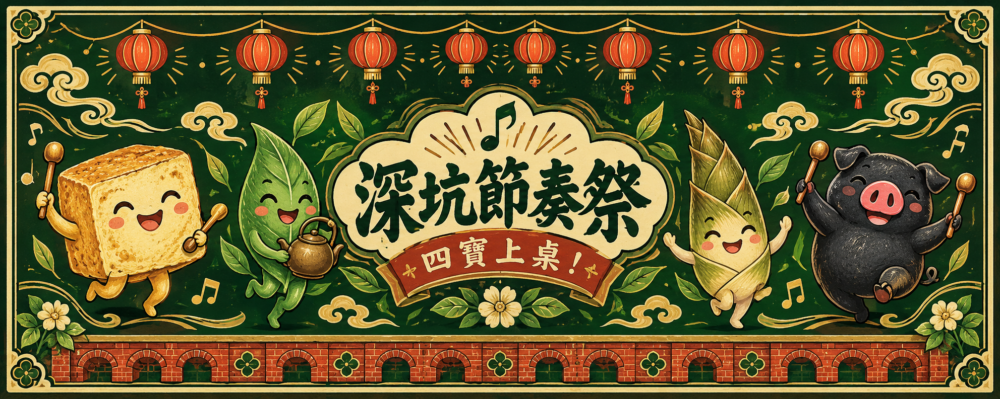

讓四寶跟著節奏上桌
老街開張，就差你的節奏。
跟著八拍出餐，完成三輪九張訂單。一起累積 18 人氣，讓深坑老街熱鬧起來！
營業進度
老街人氣0 / 18 目標
準備出餐♪
先練習，再正式演奏。
主持人：請合計全隊錯誤（同一人、同一拍最多 1 錯）。
黑豬左右同時拍
本局出餐紀錄
第一次來？先看玩法與數位版說明
豆：一下；茶：一拍內兩下；筍＋續：持續按住兩拍；豬：左右兩手同時；休：全部放開，不敲擊。
先練習，再以四拍預數開始正式出餐。加急單同一張卡連奏兩遍，沒有中間休息。0 錯：一般 3／加急 4 人氣；1–2 錯：一般 2／加急 3 人氣；3 錯以上重試一次。重試 0–2 錯得 1 人氣，否則 0 人氣。
單人模式是數位改編：每拍最多計 1 錯，拍點容許誤差為一拍的 22%，黑豬左右差距須在 150 毫秒內。竹筍請持續至第二拍結束，於下一拍放開。正式出餐只顯示拍數，不提供動作語音提示。觸控裝置請用兩指拍黑豬。
主持模式保留原版團隊計錯，由真人觀察各玩家，不使用麥克風或相機。每單輪換主持人；其他玩家各自使用實體節奏墊，演奏完整節奏。單人模式人氣不可直接與桌遊團隊比較。
50 BPM 為練習成績，80 BPM 為熟練成績；速度整局固定。切換分頁會作廢當次演奏，不消耗重試。
閱讀原版完整規則書 ↗